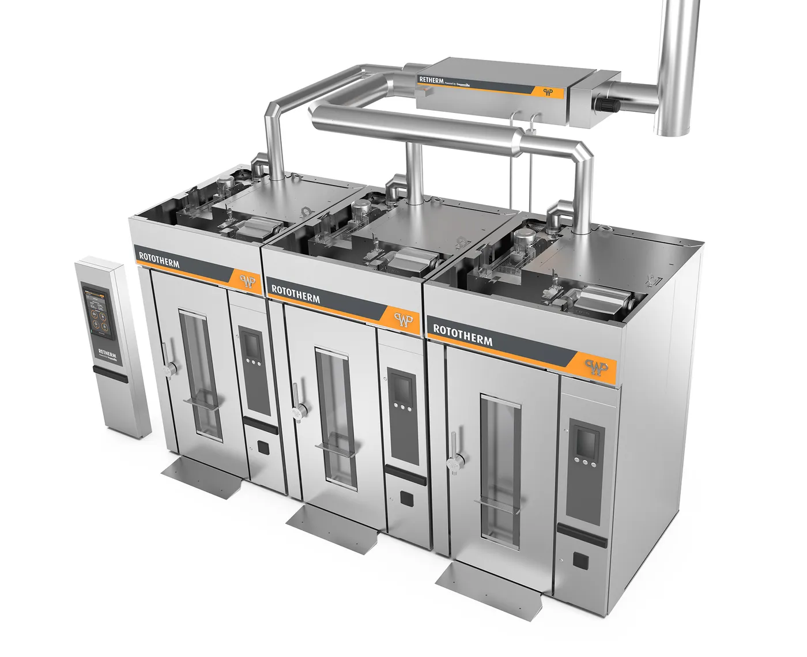

Welche Anlage Ihr Abgas erzeugt, ist zweitrangig. Dass es heiß rausgeht, zählt.
Tunnelofen oder Härteofen, Dampfkessel oder Biogas-BHKW, Trockner oder etwas, das auf keiner Liste steht: Die Physik ist immer dieselbe. Heißes Abgas trägt bezahlte Energie nach draußen – und ein Abgaswärmetauscher holt sie zurück. Wir bauen die Komplettanlage dafür, branchenoffen, vom Kilowatt- bis in den Megawattbereich.
01 — Die eine Bedingung
Wir fragen nicht nach Ihrer Branche.
Kataloge sortieren nach Branchen – und wer sich nicht wiederfindet, klickt weg. Dabei entscheidet über Wärmerückgewinnung keine Branchenliste, sondern eine einzige Bedingung, die Sie an Ihrem eigenen Kamin ablesen können: Es geht heißes Abgas nach draußen.
Ob dieses Abgas beim Backen, Härten, Brennen, Schmelzen, Trocknen, Räuchern oder bei der Stromerzeugung entsteht, ändert an der Rechnung wenig. Temperatur, Volumenstrom und Betriebsstunden bestimmen das Potenzial – alles andere ist Auslegungsarbeit, und die ist unser Beruf.
Deshalb gibt es hier keine Auswahlpflicht: Die Übersicht unten zeigt typische Quellen. Wenn Ihre fehlt, gilt der Satz erst recht – schicken Sie uns Ihre Eckdaten.
- ≥ 150 °C Abgastemperatur – der Sweetspot liegt bei 150–250 °C, deutlich mehr ist erst recht geeignet.
- > 1.500 h/a Betriebsstunden – je länger die Quelle läuft, desto schneller trägt sich die Anlage.
- Wärmebedarf im Betrieb: Heizung, Warmwasser oder Prozesswärme nehmen die zurückgewonnene Energie auf.

02 — Typische Quellen
Vier Familien. Unzählige Anlagen.
Zur Orientierung, nicht zur Auswahl: So gruppieren wir Abgasquellen in der Auslegung. Zu den meistgesuchten führen eigene Seiten mit Details – gebaut wird für jede.
Öfen & Thermoprozess
- Tunnel- und Durchlauföfen
- Etagen- und Stikkenöfen
- Härte- und Glühöfen
- Schmelz- und Schmiedeöfen
- Brennöfen für Keramik und Ziegel
Wärmerückgewinnung am Industrieofen →
Wärmerückgewinnung am Backofen →
Kessel & Wärmeerzeuger
- Dampfkessel
- Heißwasserkessel
- Thermoölerhitzer
- Prozessfeuerungen
Motoren & Kraft-Wärme
- Erdgas-BHKW
- Biogas-BHKW
- Gasmotoren und Generatoren
- Dauerläufer in Industrie und Quartier
Trocknung & heiße Abluft
- Band- und Trommeltrockner
- Sprühtürme
- Lackier- und Einbrennanlagen
- Räucheranlagen und Darren
03 — Ihre Quelle fehlt?
Dann gilt der Satz erst recht.
Die Liste oben ist Orientierung, keine Eintrittskarte. Über 100 Anlagen in Jahrzehnten heißen vor allem: sehr viele Sonderfälle. Wenn bei Ihnen heißes Abgas nach draußen geht, prüfen wir es – unabhängig davon, wie die Anlage heißt, die es erzeugt.
Bäckerei & Lebensmittel · Metall & Härterei · Keramik & Ziegel · Chemie & Pharma · Holz & Papier · Textil & Wäscherei · Landwirtschaft & Biogas · Energie & Kommunen · Gießerei & Guss · Glas & Baustoffe – und jede Branche, die in dieser Aufzählung fehlt.
Der nächste Schritt
Drei Zahlen genügen für die erste Antwort.
Abgastemperatur, Volumenstrom, Betriebsstunden – der Potenzial-Check rechnet in einer Minute aus, was Ihre Quelle wert ist. Und wenn Sie die Werte nicht kennen: anrufen, wir helfen beim Schätzen.
- Telefon 07392 – 700 10
- E-Mail info@ganzenmueller.de
- Auch spannend Förderung für Abwärmeprojekte →